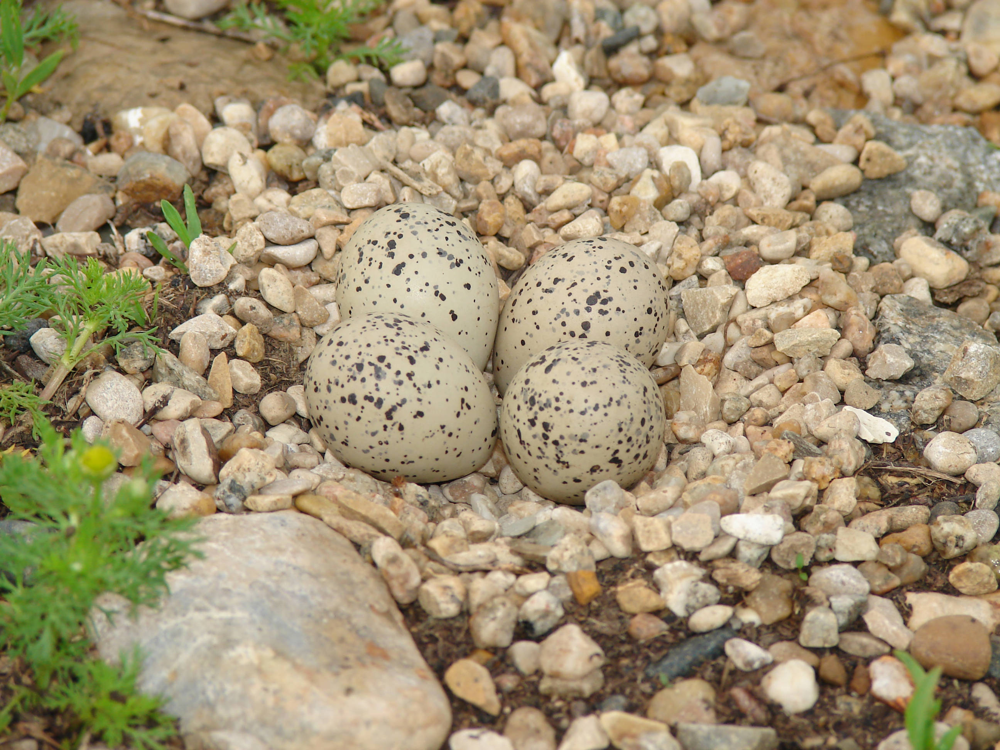

Generally, piping plovers favor small sand dunes with sparse vegetation to shelter from wind and camouflage with their surroundings.
A quality habitat is necessary in order to ensure the survival of a nest.

You see the sea levels rising. Will you stay or move the nest to the populated beach?